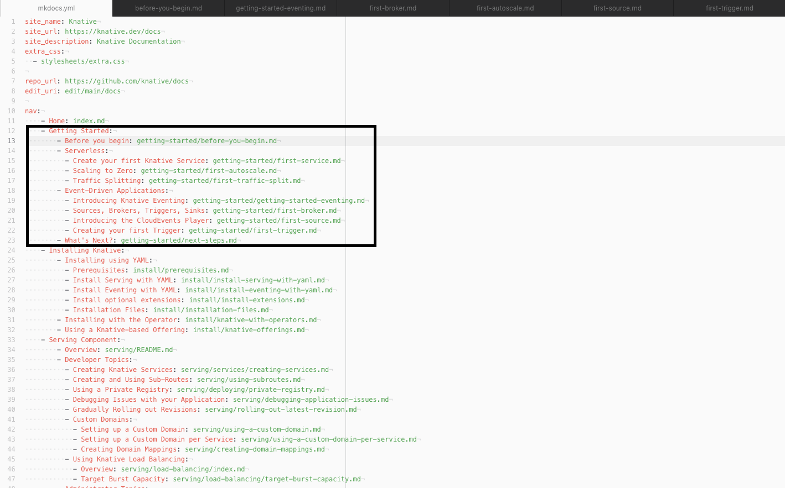

MkDocs Contributions (Beta)¶
This is a temporary home for contribution guidelines for the MkDocs branch. When MkDocs becomes "main" this will be moved to the appropriate place on the website
Install Material for MkDocs¶
Knative.dev uses Material for MkDocs to render documentation. Material for MkDocs is Python based and uses pip to install most of it's required packages as well as optional add-ons (which we use).
You can choose to install MkDocs locally or using a Docker image. pip actually comes pre-installed with Python so it is included in many operating systems (like MacOSx or Ubuntu) but if you don’t have Python, you can install it here: https://www.python.org
For some (e.g. folks using RHEL), you may have to use pip3.
pip install mkdocs-material
pip3 install mkdocs-material
Install Knative-Specific Extensions¶
Knative uses a number of extensions to MkDocs which can also be installed using pip. If you used pip to install, run the following:
pip install mkdocs-material-extensions mkdocs-macros-plugin mkdocs-exclude mkdocs-awesome-pages-plugin mkdocs-redirects
pip3 install mkdocs-material-extensions mkdocs-macros-plugin mkdocs-exclude mkdocs-awesome-pages-plugin mkdocs-redirects
Use the Docker Container¶
//TODO DOCKER CONTAINER EXTENSIONS
Setting Up Local Preview¶
Once you have installed Material for MkDocs and all of the extensions, head over to https://github.com/knative/docs/tree/mkdocs and clone the repo.
In your terminal, find your way over to the location of the cloned repo. Once you are in the main folder and run:
mkdocs serve
If you’re only changing a single page in the /docs/ folder (i.e. not the homepage or mkdocs.yml) adding the flag --dirtyreload will make the site rebuild super crazy insta-fast.
mkdocs serve --dirtyreload
First, install the necessary extensions:
npm install -g postcss postcss-cli autoprefixer http-server
./hack/build-with-blog.sh serve
Note
Unfortunately, there aren’t live previews for this version of the local preview.
After awhile, your terminal should spit out:
INFO - Documentation built in 13.54 seconds
[I 210519 10:47:10 server:335] Serving on http://127.0.0.1:8000
[I 210519 10:47:10 handlers:62] Start watching changes
[I 210519 10:47:10 handlers:64] Start detecting changes
Now access http://127.0.0.1:8000 and you should see the site is built! 🎉
Anytime you change any file in your /docs/ repo and hit save, the site will automatically rebuild itself to reflect your changes!
Setting Up "Public" Preview¶
If, for whatever reason, you want to share your work before submitting a PR (where Netlify would generate a preview for you), you can deploy your changes as a Github Page easily using the following command:
mkdocs gh-deploy --force
INFO - Documentation built in 14.29 seconds
WARNING - Version check skipped: No version specified in previous deployment.
INFO - Copying '/Users/omerbensaadon/Documents/GitHub/MergeConflictsResolve/docs/site' to 'gh-pages' branch and pushing to GitHub.
INFO - Your documentation should shortly be available at: https://<your-github-handle>.github.io/docs/
<your-github-handle> is your Github handle.
After a few moments, your changes should be available for public preview at the link provided by MkDocs! This means you can rapidly prototype and share your changes before making a PR!
Navigation¶
Navigation in MkDocs uses the "mkdocs.yml" file (found in the /docs directory) to organize navigation.


For more in-depth information on Navigation, see: https://www.mkdocs.org/user-guide/writing-your-docs/#configure-pages-and-navigation and https://squidfunk.github.io/mkdocs-material/setup/setting-up-navigation/
Content Tabs¶
Content tabs are handy way to organize lots of information in a visually pleasing way. Some documentation from https://squidfunk.github.io/mkdocs-material/reference/content-tabs/#usage is reproduced below.
Code blocks are one of the primary targets to be grouped, and can be considered a special case of content tabs, as tabs with a single code block are always rendered without horizontal spacing. Example:
=== "C"
``` c
#include <stdio.h>
int main(void) {
printf("Hello world!\n");
return 0;
}
```
=== "C++"
``` c++
#include <iostream>
int main(void) {
std::cout << "Hello world!" << std::endl;
return 0;
}
```
Result:
#include <stdio.h>
int main(void) {
printf("Hello world!\n");
return 0;
}
#include <iostream>
int main(void) {
std::cout << "Hello world!" << std::endl;
return 0;
}
When a content tab contains more than one code block, it is rendered with horizontal spacing. Vertical spacing is never added, but can be achieved by nesting tabs in other blocks.
Example:
=== "Unordered list"
* Sed sagittis eleifend rutrum
* Donec vitae suscipit est
* Nulla tempor lobortis orci
=== "Ordered list"
1. Sed sagittis eleifend rutrum
2. Donec vitae suscipit est
3. Nulla tempor lobortis orci
Result:
- Sed sagittis eleifend rutrum
- Donec vitae suscipit est
- Nulla tempor lobortis orci
- Sed sagittis eleifend rutrum
- Donec vitae suscipit est
- Nulla tempor lobortis orci
For more information, see:https://squidfunk.github.io/mkdocs-material/reference/content-tabs/#usage
File Includes (Content Reuse)¶
Knative strives to reduce duplicative effort by reusing commonly used bits of information, see the docs/snippet directory for some examples.
Snippets does not require a specific extension, and as long as a valid file name is specified, it will attempt to process it.
Snippets can handle recursive file inclusion. And if Snippets encounters the same file in the current stack, it will avoid re-processing it in order to avoid an infinite loop (or crash on hitting max recursion depth).
For more info, see: https://facelessuser.github.io/pymdown-extensions/extensions/snippets/
Admonitions¶
Tip
Admonitions (like this one) are a great way to highlight important bits of information for readers.
!!! tip
Admonitions (like this one) are a great way to highlight important bits of information for readers.
For formatting (including more advanced Admonitions), see: https://squidfunk.github.io/mkdocs-material/reference/admonitions/#usage
Icons and Emojis¶
Material for MkDocs supports using Material Icons and Emojis using easy shortcodes.

:taco:
To search a database of Icons and Emojis (all of which can be used on Knative.dev), as well as usage information, see: https://squidfunk.github.io/mkdocs-material/reference/icons-emojis/#search
TODO (Add Requests Here)¶
URL Re-directs Navigation using lukasgeiter/mkdocs-awesome-pages-plugin: An MkDocs plugin that simplifies configuring page titles and their order Index.md vs. README.md awesome-pages